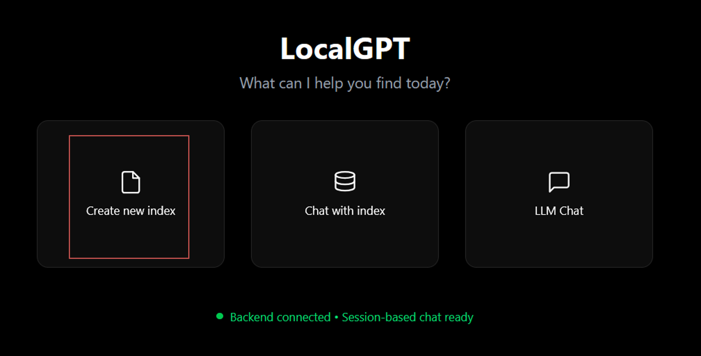
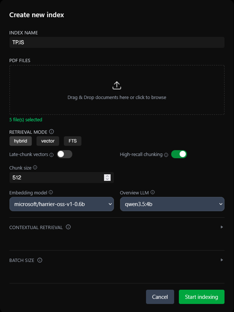
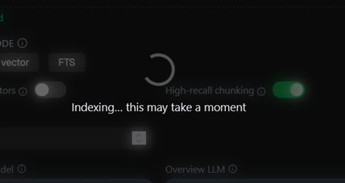
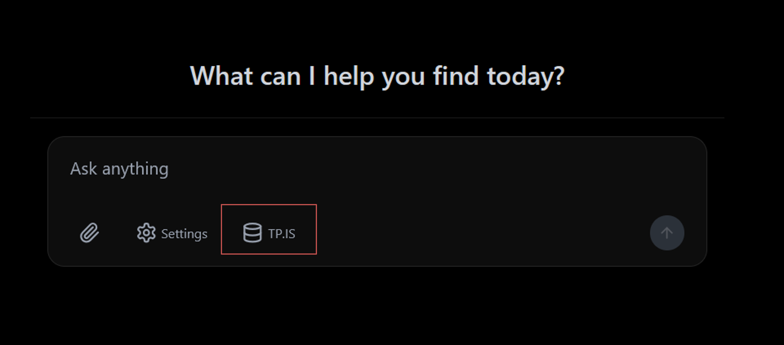

Guia de utilização · Windows 11 · LLM local
LocalGPT
Instale, carregue os seus ficheiros e comece a conversar com os documentos.
O que é
O LocalGPT permite carregar documentos e fazer perguntas sobre o seu conteúdo, com modelos executados no computador. Primeiro cria um índice dos ficheiros; depois conversa com esse índice selecionado.
Requisitos específicos
-
Python 3.10+ — recomendado 3.11; as imagens
Docker usam
python:3.11-slim. - Node.js 20+ e npm.
- Docker — opcional para instalação direta; necessário para o percurso com contentores deste guia.
- 8 GB de RAM ou mais — recomendados 16 GB ou mais.
- Ollama — necessário em ambas as formas de instalação.
Comece com Git, WSL 2 e Docker Desktop preparados segundo o README. Precisa de internet para os downloads iniciais.
Instalação
1. Instalar as ferramentas
Copie o bloco para instalar Python 3.11, Node.js LTS com npm e Ollama. No percurso Docker, Python e Node.js já estão incluídos nas imagens; a instalação no Windows fica disponível para utilização direta.
winget install --id Python.Python.3.11 -e --source winget
winget install --id OpenJS.NodeJS.LTS -e --source winget
winget install --id Ollama.Ollama -e --source wingetResultado: as três ferramentas ficam instaladas. Leia e confirme os termos apresentados; aguarde que cada instalação termine.
Feche e reabra o PowerShell para reconhecer os programas. Confirme:
py -3.11 --version
node --version
npm.cmd --version
ollama --versionResultado: versões do Python 3.11, Node.js, npm e Ollama.
2. Descarregar o LocalGPT
Descarregue o repositório com as correções para este projeto:
git clone https://github.com/Estvexx/localgpt-tp1.git localGPT
cd .\localGPTResultado: código descarregado para a pasta localGPT e terminal dentro dessa pasta. Escolha uma pasta de destino onde ainda não exista localGPT.
Descarregar o modelo
Abra Ollama no menu Iniciar. Depois descarregue o modelo:
ollama pull qwen3.5:4bResultado: modelo descarregado; aguarde pela indicação de sucesso.
Se Ollama não estiver a funcionar
Execute o comando abaixo numa janela PowerShell separada e deixe-a aberta. Volte à primeira janela para descarregar o modelo.
ollama serveResultado: servidor Ollama em execução. O comando mantém a janela ocupada até o parar com Ctrl+C.
Se indicar que a porta já está ocupada pelo Ollama, este já está a funcionar; não precisa de iniciar uma segunda instância.
Os modelos de embeddings e de reordenação são separados e podem ser descarregados no primeiro uso.
Arranque e acesso
Com Docker Desktop e Ollama abertos, abra a pasta
localGPT no Explorador → botão direito →
Mostrar mais opções → Open Git Bash here.
./start-docker.shResultado: serviços iniciados. Aguarde pelos downloads do primeiro arranque.
O comando anterior demora algum tempo a ser executado, quando os serviços estiverem prontos, abra Abrir LocalGPT ↗
Endereço: http://localhost:3000. Se ainda não responder, aguarde e volte a tentar.
Criar o índice dos ficheiros
-
Escolher «Create new index»
Na página inicial do LocalGPT, clique no botão assinalado para criar um índice.

Imagem 1 — Criar um novo índice. Clique na imagem para ampliar. -
Preencher os campos e carregar os ficheiros
Preencha conforme a imagem: dê um nome ao índice, carregue os seus documentos e confirme as opções abaixo.
-
Index name: um nome à sua escolha; no
exemplo,
TP.IS. - Retrieval mode:
hybrid. - Late-chunk vectors: desativado. High-recall chunking: ativado.
- Chunk size:
512. -
Embedding model:
microsoft/harrier-oss-v1-0.6b. -
Overview LLM:
qwen3.5:4b.
Arraste os ficheiros para a área de upload ou clique nela para os escolher. Depois clique em Start indexing.

Imagem 2 — Preencher os campos e iniciar a indexação. Clique na imagem para ampliar. -
Index name: um nome à sua escolha; no
exemplo,
-
Aguardar pela indexação
Enquanto aparecer Indexing… this may take a moment, aguarde sem fechar a aplicação. A duração depende dos ficheiros e do computador.

Imagem 3 — Ficheiros em processamento. Clique na imagem para ampliar. -
Entrar no chat com o índice selecionado
Quando a indexação terminar, será encaminhado para o chat. Confirme que o nome do índice aparece junto de Settings; no exemplo, TP.IS.

Imagem 4 — Chat pronto para perguntas sobre o índice. Clique na imagem para ampliar.
Primeira pergunta
Com o índice selecionado como demonstrado na figura 4, escreva no chat:
Resume os pontos principais destes documentos e indica os excertos que sustentam a resposta.
Envie a pergunta e aguarde. Confira a resposta nos documentos originais.
Parar e voltar a iniciar
docker compose --env-file docker.env stopResultado: serviços parados, sem apagar os documentos ou índices.
Noutro dia, abra Docker Desktop e Ollama, abra o
Git Bash na pasta localGPT e repita o comando do
passo 5. Depois volte a
http://localhost:3000.
Problemas frequentes
Um comando não é reconhecido
Feche e reabra o PowerShell após instalar as ferramentas. Se winget não existir, instale ou atualize «Instalador de Aplicações» na Microsoft Store.
Ollama não liga ou o modelo não aparece
Abra Ollama, conclua o download do passo 4 e repita o arranque do passo 5. Se tiver iniciado o servidor no terminal, mantenha essa janela aberta.
A interface não abre ou a indexação demora
Aguarde pelos downloads e processamento inicial. Para consultar o que se passa:
docker compose --env-file docker.env logs --tail 50 rag-apiResultado: últimas mensagens do serviço de documentos.
O nome do índice já existe
Escolha outro nome para o novo índice, ou elimine o índice com o mesmo nome.
Referências: Ollama para Windows, Qwen 3.5 4b e catálogo WinGet: Python 3.11, Node.js LTS e Ollama.
← Voltar aos guias